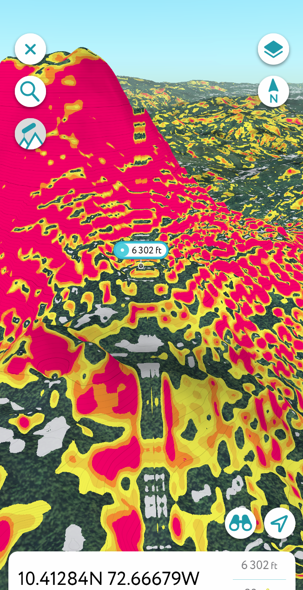

🛡️ Geodetic Codex Corridor Model – V4 Expansion & LiDAR Flythrough Addendum
Monte Verde Region Orientation

The fly-through begins in the Monte Verde region of southern Chile (~38°S), where early settlement and highland observatory potential first appear along the 72.66°W corridor. The PDF mvo-region.pdf provides LiDAR and slope-based views from the corridor base south of the equator. Terrain slices show repeating elevation nodules and slope-scarring suggestive of hydrodynamic control—possibly as part of an ancient infrastructure grid, not merely natural topography. Key points such as CG13562 and the MVO fulcrum show mirrored terrain logic with Meadow House, supporting the corridor’s predictive elevation model.
Equatorial Uplift and the CO42 Basin
By slide ~27 in corridor1-lr.pdf, the fly-through crosses into equatorial terrain. Here, a significant transition occurs at 10.4219°N, revealing radial terraces, slope symmetry, and elevation consistent with Codex amphitheater observatories. The CO42 site—atop a trihedral basin—appears as a hydrological and celestial mirror to Meadow House Observatory. This mid-corridor uplift may be the geometric and harmonic fulcrum of the entire Codex model. Its 502m elevation and amphitheater slope markers present a compelling case for planetary-scale architectural foresight, now rendered visible via multi-angle LiDAR and hillshade mapping.
Patio Bonito Geoglyphic Sweep – Star Fort Pattern Recognition
New terrain analysis near the CO41 node has revealed geoglyphic patterns around the Patio Bonito region that strongly resemble star fort geometries. The LiDAR overlays and slope-aspect coloration in patio-bonito-star-forts.pdf suggest radial basin symmetry, petal-like ridge outlines, and uniform angular distribution—indicators that go beyond typical erosion. These features likely reflect a convergence of hydrological control and astronomical alignment.
Set within the resilient geology of the Guiana Shield, this region may have remained emergent during past meltwater epochs such as the hypothesized Lake Parime system. In that context, these “star-like” upland nodes may have acted as both hydraulic gates and celestial mirror observatories—placing them firmly in the framework of planetary survival architecture. Their regular spacing and elevation mirror global patterns in fortification and observatory logic found in regions like Roraima, North Africa, and East Asia, inviting future collaboration and pattern-matching through geospatial APIs.
This discovery enhances the strategic weight of CO41 and justifies its elevation within the Codex polyhedral structure. Further modeling and community collaboration are encouraged to trace the potential arc of similar star forts across the broader Amazonian highlands.
The final slide of the PDF offers a rare LiDAR-based comparison: a high-resolution hillshade and aspect analysis of the Worcester Range in Vermont, facing southeast from ~72.75°W. This corridor terrain—anchored by Meadow House Observatory (MHO)—reveals an azimuthally inclined harmonic band, with radial slope patterns reminiscent of those seen at Patio Bonito. This cross-hemispheric comparison reinforces the Codex hypothesis: that ancient observatory sites were selected based on durable hydrological basins and harmonic slope geometries, not random topography.

Corridor Continuity to Caribbean Latitude
The continuation shown in corridor2-lr.pdf brings the viewer north of the equator to ~9.5°N and eventually to 20°N across the Caribbean basin. It then arcs southward to terminate at CO42, offering a mirrored passage of the original southern trajectory. Throughout this corridor segment, slope aspect coloration and terrain linearity suggest engineered patterns and altitude carving—possibly for long-term glacial meltwater control. Circular features such as CG13576 reinforce the theory of hydrological lensing nodes. These structures, whether naturally enhanced or intentionally engineered, reflect a strategic use of harmonic geography across cultures and epochs.
📠Download Full Statement of Findings: Geodetic Codex Node Release – V4 Corridor Integrations & Nomenclature Refinements

↠Back to Portal • This page is part of ChiRIPP v1 public tools.